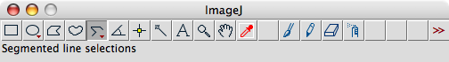

This document describes the C. elegans nerve cord fluorescent puncta analysis programs, Preprocessor_2, punctaanalyser and batch, and some tips about image preparations.
This software tool kit is provided "as is" without warranty of any kind and no support at all.
Copyright © 2008 Taizo Kawano
The Preprocessor_2 is a Plugin for ImageJ, a public domain image processing software. And punctaanalyser and batch are function files for GNU Octave 2.9 or Matlab 6, numerical computation environment. If you have installed neither, install softwares first. Both ImageJ and Octave are multiplatform software. ImageJ installation is simple. Just follow the instruction found in Downloads page of ImageJ site. (The Preprocessor_2.class requires Java 1.5 or later version. If your Java version is lower than 1.4, you need to update it. If you have JDK 1.4 you may try recompile source code.) Then put the Preprocessor_2.class file to plugin folder of ImageJ. If you have interested in modify it, the source code could be found here. Documents about installation of Octave could be found somewhere on the web, but no guarantee of successful installation because its based on UNIX and do it yourself culture. So I recommend Matlab IF YOU CAN install it. If you use Octave, you might have to install additional packages, octave-forge (at least image and I/O packages).
outline
At first, you have to have pretty good (paper quality) pictures of your samples. Preprocessor_2 straighten the axon and processes these pictures into cropped and background subtracted images. You must save these subtracted images into same Directory with punctaanalyser and batch with named as samplegroup-serialnumber.txt (ex, wt-1.txt).
Then use punctaanalyser and play around with 2nd and 3rd argument to determine threshold that you think the best.
Finally, use batch to process all pictures and collect data.
The batch program makes data files such as distance.txt, fixwidth.txt... etc.
So you can analyze them whatever program you like (Excel, SPSS or R, which I use.)
The program can analyze any pictures. But to obtain accurate and reliable result, there might be several points.
Take non saturated/non-Zero background pictures The basics, just in case. If you use 12 bit camera, 4096 (2^12) is the maximum value. So, If you see the brightest region of your image has this value, it is saturated. About the backgound, always keep some background signals. If you cut off the background, you may lose information about local background variation.
Use high mag. objective. Basically, reducing data quality is pretty easy, and getting back the lost information is hard work, almost impossible. In short, keep the highest quality.
Use low gain as possible. Increasing gain makes bright picture, but also increases noise. I know if you use 0 gain, it might difficult to see the signal on the monitor, and longer exposure cause quenching. So, there is no right answer. Normally I use 20% gain, 200 msec exposure, but it could be different with different marker.
Take z-serial sections. If you take pictures as single shot, focused area might be quit narrow (depends on focal depth of yor objective or microscope system). As you know, the axon is not so straight, and out focused puncta doesn't make sense. If you can not get long in focus stretch of axon by one shot, take pictures with multiple foci and combine them into single image. Many acquisition programs have fuction to make such images. If your acquisition software doesn't have it, alternatively, using ImageJ, open serial images from File-Import-Image Sequence menu. Choose three adjacent z-sections that contain in-focus puncta. Then combine by Image-Stacks-Z project-Max intensity. Make sure region where puncta are in-focus within the sections and use only such region.
Save as multiple "tiff" format, not "tiff for publication". (For Open lab user) Firstly, The "tiff for publication" option of Openlab makes data having three channels. When you just using single channel (taking pictures of only green or red), this doesn't make any sense. You are triplicating same data and occupying storage. Here I would say, don't keep useless data.
The second point is more important. The "tiff" option store pictures as 16 bit single channel, on the other hand "tiff for publication" does as 8 bit x 3 channels. The difference of bit is amount of information of each channel. If it is 1 bit, the picture just has two different brightness, black or white. If its 2 bit, there are four; black, dark gray, light gay and white. So, 8 bit data only has 256 different brightness, and 16 bit can describe 65,536 deference. Obviously, 16 bit is better. This allows you more flexible use of pictures at later stage.
Alternatively, you may save as openlab native format, liff, and open it on ImageJ with loci_tools.jar plugin distributed by OME at LOCI – Software – Bio-Formats library. This plugin may split channels automatically, but it seems buggy. So still I prefer to save as multiple tiff and import them.
The Preprocessor_2 needs your help to determine where is the axon. It rotates each segment as horizontal and crops around axon. Then subtracts background signal, which determined by the top and bottom 5 pixels of each columns of cropped image. Here is example.
Then choose the "segmented line selections tool"

and click along axon.
You can add points with Shift-click or delete with option-click and move those. Also the line can be moved with allow keys or mouse.
If you think the line fit with axon enough, use Preprocessor_2 from Plugins menu or shortcut. You will see the subtracted image and save dialog, which requires you to choose saving folder and name of file. Please name the files as mentioned before; samplename-number.txt (ex, hpIs100-1.txt). The serial number must be serial. Missing number cause error of batch script. Also, If you want to use R script later part, the name must not have symboles, such as ";".
Attention This program does straighten curved axon with rotation method, but doesn't calculate expansion/contraction cased by body bend of worm. So, still you need to take pictures of relatively straight worms, not coiling one.
Once you have done the image pre-processing using Preprocessor_2, now the time of actual analysis. Open command window of Octave/Matlab and move to working directory where store your data and type punctaanalyser('wt-1')
The calculation of pcount, plineardensity, pdist, pwidths, pgaps, pintens and pvolumes can be explained with this figure. The x-axis represent pixel and the y-axis represent intensity. pcount is the number of blue cross. plineardensity is lineardensity(num/um) of blue cross. pdist is distance between each blue cross. pwidth is length of green to green that have blue cross. pgaps is green to green but not including blue. pintens is height of blue cross. pvolumes is the area surrounded by green-blue-green.
The fixwidth, fixvol and fixgap are calculated with simple method. The region that above the threshold is defined as puncta. fixwidth is green to black. fixvol is area surrounded by green-redline-black. fixgap is black-green.
If you see strange figure or error, the threshold setting might be inadequate. Try, punctaanalyser('wt-1', 40, 2000) or so. (From now, you don't need to type everything every-time. Hit the up-arrow key, then you will see the command that you used last time. So all you need to do is just change the variables that you need.)
The second argument define threshold of first figure, and third argument is for the second one. Also you can use like this
punctaanalyser ('wt-1', 40, 2000, 1, 63) the 4th and 5th arguments determine mode and objective. 0 is default mode and shows all figures. mode = 1 doesn't show any figure (silent mode). Now default objective is changed to 0. So, the unit of results are pixel.
Also, if you need data of each picture separately, copy and run this.
[pcount, plineardensity, pdist, pwidths, pgaps, pintens, pvolumes, fixwidth, fixvol, fixgap, fixwidthlineardensity, fixgaplineardensity] = punctaanalyser ('wt-1')
With this command, the program display all data on the command-line interface.
Finally, you can process all of these images with single command, like; batch('wt,e5,fc16,e1598',40,2000) (Make sure genotypes were surrounded by ', and there is no spaces between genotypes.) Then you see something like this.
octave:8> batch('wt,e5,fc16,e1598',40,2000)
samplenames = wt,e5,fc16,e1598
thresholdcoeff = 40
fixthreshold = 2000
modestring = silent
objective = 100
Do you want to process with this condition? y/n
If its OK, type y, if not, n, and re-enter what you want. Again, you can use the 4th and 5th arguments to designate mode and objective. But now 1 is default mode and doesn't show any figure (silent mode).
rscript.R
This is example R script for punctaanalysis tool kit. If you use batch program, you can use this script.
To use it, start R and change the working directory to where your pictures and data are stored, and just copy everything in the script and paste it on R terminal and push return key. Once you have run this script, you will get some pdf density graphs, and ready to test data sets which has been log2 transformed. ex. wtfixwidth, daffixwidth... Then you can test with something like this
t.test(wtfixwidth, daffixwidth)
I don't know what kind of test is best. Making a choice is your job.
Attention: log transformation affect the result of parametric test.
Also, here is an example of density graph
plot(density(wtwidth), col=2, xlim=c(-2, 2), ylim=c(0,1))
par(new =T)
plot(density(dafwidth), xlim=c(-2, 2), ylim=c(0,1))
I hope this example file helps you to learn R scripting. 20080407 Taizo
2009/10/26 Beta5.
Fixed a bug, introduced in Beta3, that cause pvolume is not calculated as expected.
The default objective is changed to 0, and the output unit is pixel, not um.